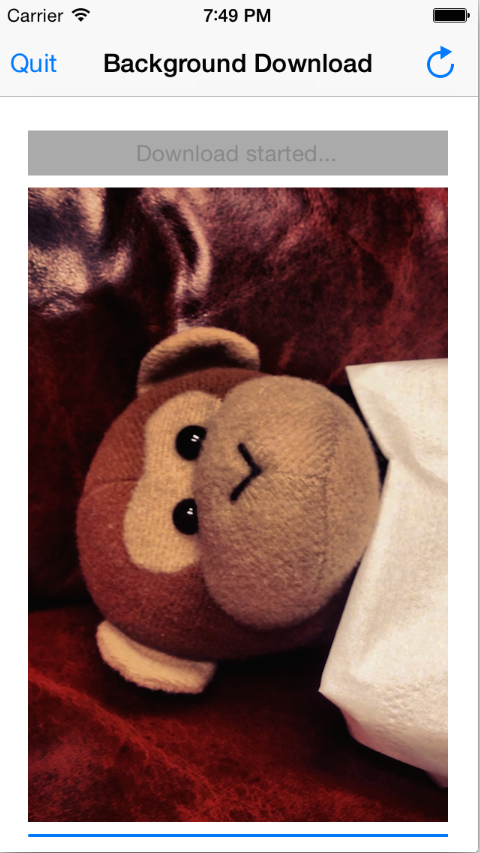

Duration
20 minutes
Goals
You will work on an application that downloads a very large monkey image and displays it when done. During the download, a progress bar gets updated and when the download is finished, a local notification is displayed to the user.
To truly test the background downloads, we need to forcibly terminate the application - you can use the Task Switcher for this, or the UI has a quit button that will terminate the application by calling the private iOS Exit method. Note that this is against the Apple guidelines and if you used this in a real application it would likely be rejected from the AppStore!
Your goal is to complete the download and notify the user even if the application gets terminated.

Required assets
The provided Exercise 2 folder contains a starter project in the Lab.Start folder and a completed project which you can use to compare your final solution to.
Exercise Overview
Background downloads on iOS require four things:
- Session configuration (
NSUrlSessionConfiguration) - Session delegate (
NSUrlSessionDownloadDelegate) - Session identifier (
string) - Session instance (
NSUrlSession)
The session configuration defines the basic behavior of the transfer. The application will use the background configuration which can be created by calling
NSUrlSessionConfiguration.CreateBackgroundSessionConfiguration(). If the application is not running, it will be launched into the background.
Then iOS calls void HandleEventsForBackgroundUrl() and afterwards the session delegate methods will be triggered.
Most of the infrastructure required to make the background download work has already been implemented and can be found in the CustomSessionDownloadDelegate.cs and in DownloadController.cs. Be sure to read through the code for a better understanding of what is going on behind the scenes.
When you have added the missing code pieces, run the application and start the download. You can see the download progress as the progress view slowly updates. Hit the Quit button to terminate the application and wait. After a while you should get a notification. Try double-pressing the home button to activate the task switcher. It will show an updated screen shot of the application. Switch to the application to see that the monkey image has really been downloaded.
Steps
Below are the step-by-step instructions to implement the exercise.
Create and configure the transfer session
-
Locate the
InitializeSession()method. Creating the requiredNSUrlSessionrequires several steps:-
Create a background session configuration by calling
NSUrlSessionConfiguration.CreateBackgroundSessionConfiguration. This takes a session identifier as parameter.- This ID is available as a constant in the view controller.
-
Create a session delegate. This has already been implemented for you in
CustomSessionDownloadDelegate.cs. -
With the configuration and the delegate, create the
NSUrlSessionand assign it to thesessionfield which is already declared in the class.
-
Create a background session configuration by calling
Create a new download task
You need three things to start the download and make it continue even if the application is terminated:
- The URL of the file to download.
-
A
NSUrlSessionDownloadTaskresponsible for downloading the song. -
The
NSUrlSessionwhich manages all the currently running downloads.
-
Locate the
EnqueueDownloadmethod and use it to create and start a new download task. This method gets called if you press the Start download! button. -
Use the
sessionfield to create the download task (CreateDownloadTask) using theDownloadController.downloadUrlas the URL. You will need to convert this string into aNSUrl. -
If it fails to create the download task, it will return
null. Check for this case and show a message usingUIAlertControlleron failure. -
Otherwise, call
Resumeon the task to start/resume the download.
Retain the completion handler
If the application gets terminated while a download is executing, iOS will restart the application into the background. It will then
call HandleEventsForBackgroundUrl on the application delegate.
You will have to retain the completion handler that is passed to you. The session delegate will call it when the download finishes to allow iOS to update the screen shot that is used for the task switcher.
- Open the AppDelegate.cs source file.
-
Override the
HandleEventsForBackgroundUrlmethod and save the passedActioncompletionHandler off in the existing static field BackgroundSessionCompletionHandler that has already been declared. -
You can see where this is used in the CustomSessionDownloadDelegate.cs file in the
DidFinishEventsForBackgroundSessionmethod. - Run the application and try downloading the large image.
Info.plist file!
Summary
In this exercise you used background transfers to download data from the Internet even if the application gets terminated.